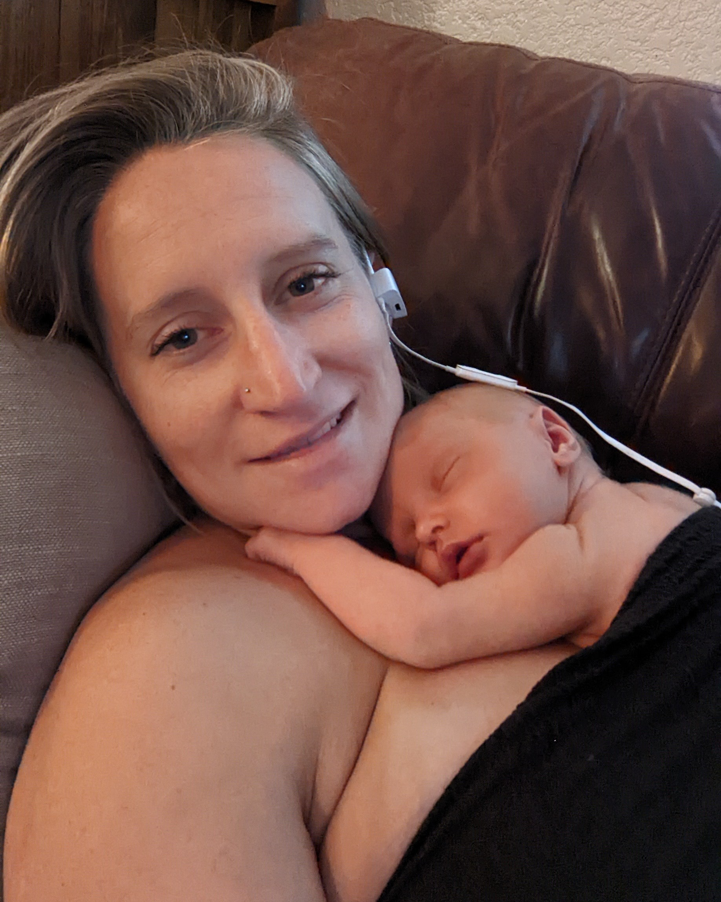
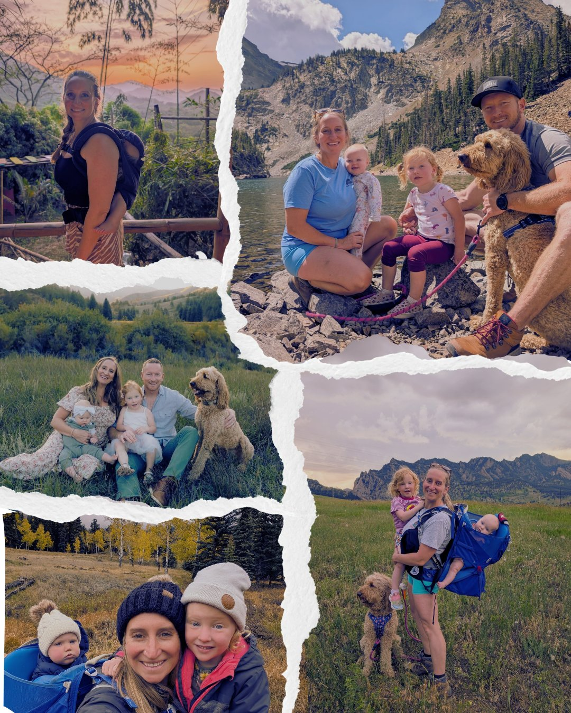

I'm Ellen LeBleu
And if you've snapped at your kids this morning, cried in your car this week, and you can't remember who you are anymore…you're in the right place.
I help moms who are in the thick of motherhood figure out how to take care of their own needs, without feeling like they're taking something from their families.
You probably wound up here because…
- Your own needs are so far down the to-do list, you had to start scribbling on the back of the page
- You can't find a moment to yourself–you only managed to shave your right leg in the shower yesterday before your baby started banging their rattle on the shower door
- Your relationship with your partner is nonexistent, but you don't have the energy to deal with the fact that you're just roommates who coparent
- There just isn't enough time (or enough coffee) for you to actually step away and prioritize what you need.
- And you're becoming afraid of what happens to you (and your family) if you keep going on like this
So you've probably already tried
- reminding yourself that your baby is more important than anything else, but that just leaves you more and more depleted
- waking up at 5am to workout, but somehow they always know and want to party with you just after you finish your warmup
- complaining to your girlfriends how you just feel tired and like you don't even know who you are anymore, but know deep-down that doesn't make you feel better, either
- Telling yourself “it's just a season,” but that season keeps going on forever, with no end in sight

I've been right where you are now.
After I had my first baby, we spent my entire maternity leave fighting to make breastfeeding work — triple feeding, a tongue tie release, and the constant anxiety of wondering if I was accidentally starving my own child.
By the time we figured it out, it was time to go back to 10+ hour shifts, daycare drop-offs, and wondering how I was supposed to do all the things that make me a good mom.
I was exhausted and knew I needed some relief.
My husband traveled a lot for work, so it usually fell on me to keep the house running and stay on top of the baby. But I realized something: if I didn't intentionally carve out time for myself, it was never just there.
If I didn't say it out loud, my husband didn't magically know what I needed. So I started saying it. And I put it on the calendar. (A shared family calendar is the BOMB, by the way).
One yes led to another…
- “Hey babe, cool if I go to the gym Saturday morning?”
- A short hike with the baby, alone — yes, I shared my location with everyone, and yes, my mom still thought I was a little crazy, especially that one time we ran into a moose.
- A painting workshop with new girlfriends, some creativity, a little wine.
- A book club I started because I couldn't find one, so I figured I'd make one, instead (which if you know me at all, is an ode to the Grinch, who couldn't find a reindeer, so he made one instead)
Letting go of ‘perfect’
The relief didn't come instantly. It came slowly, from choosing myself over and over.
The real shift happened when I stopped trying to be the perfect boss, the perfect employee, the perfect wife, the perfect mom — because I can't be all of those, all the time. It's an ebb and flow. Letting that sink in took a weight off my shoulders I didn't know I was carrying.
Taking time away from my family to take care of myself… is taking care of them, too.
And somewhere along the way, I also realized I wasn't living in alignment with my own values — or showing up for my family the way I wanted to. So I became a nurse coach. I was able to ditch the long hours and demanding call shifts that pulled me away from my own babies, and from my real passion. Instead of watching my patients progress to the next level of care, but never knowing what happened to them next, I now get to sit with other moms and help them take care of themselves — so they can show up refreshed, fulfilled, and pour that love back into their own families.
Every mom I help means one more kid growing up in a calmer, more regulated home.
Helping mom, helping the family.
People don't find my page because they're impressed by a long list of letters after someone's name. They find me because they're already drowning and looking for someone who knows how to bring them back to the surface — someone with lived experience.
But if you're type A and want the letters anyway:
- Registered Nurse (RN), BSN from the University of Texas at Austin
- Board-Certified Nurse Coach (NC-BC)
- 14 years of hospital-based nursing — ICU, procedural, and managerial
- Mom of two (i.e., double the lived experience)
Both my career and my own motherhood have taught me the same lesson, over and over: I know how draining it is to always be needed. And I know how important it is to take care of the one body you get to live in.
Not perfect, just present.
Do I still get overwhelmed when the baby is crying and my toddler picks that exact moment to urgently show me something? Yes. I'm still human. But I know how to manage my own emotions instead of letting them manage me. I'm not as quick to snap. I know how to take a break. I know how to take care of my own needs — and I can feel the difference when I do.
It really comes down to putting on your own oxygen mask before anyone else's. You can't keep pouring from an empty cup.
I go outside — a hike, a paddle-board session, a camping trip — because I know what matters to me, and I build it into our family life. I plan regular girls' nights. I move my body more days than not. I sit and paint while my kids paint. I meal-plan so I'm not stressed every day at 5pm.
Could you find dust on my dresser if you tried? Absolutely. But as long as we have a few minutes to tidy up, I don't need perfectly-clean.
The mindsets, the small changes, the systems that help me feel regulated — those are the same ones that can take you from “burnt out, depleted mom” to “thriving, regulated woman.”

In case you needed convincing that we're more alike than you realize, here's a little more about me…
- I've lived in three different countries (four, if you count Texas), and we aim to travel to a new one every year.
- I can recite the alphabet backwards just as quickly as I can forwards
- I speak three different languages (I can carry a conversation in English and a basic one in Spanish, but you have to give me a drink or three before I'm brave enough to strike up a conversation in Portuguese)
- I still don't understand how they know that dogs can't see in color…was it a “bark twice if you think my umbrella is yellow” situation?!
- I bought myself some rollerblades last year (because if my kid can learn a new skill, so can I!!)
Now, enough about me, let's hear from you! The real you.
If you're ready to begin the journey back to YOU, let's start here.